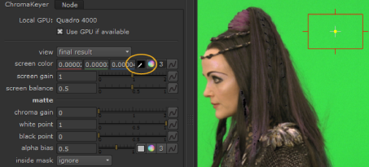

The screen color is probably the most important control in keying, and you should always pick the screen color before doing anything else. It should be set to the color of the green or blue behind the foreground object.
| 1. | Start Nuke and read in the foreground and background images. From the Keyer menu, select ChromaKeyer and attach a Viewer. |
| 2. | In the ChromaKeyer Properties panel, click the color swatch next to screen color to activate the eye dropper. |
| 3. | Pick the screen color directly from the image by Ctrl/Cmd+Shift and dragging a rectangle over the green pixels. The average value of the pixels selected is used. |
TIP: You can discard sampled pixels by Ctrl/Cmd+right-clicking in the Viewer.

It’s worth picking different shades of green or blue from different parts of the screen to get the best result.
NOTE: Picking colors repeatedly does not add to previous selections, keying more of the image with each click. To key more of the image, pick different shades of green or blue in additional ChromaKeyer nodes downstream, and set the inside mask control to source alpha. See Multi-Pass Keying for more information.
Picking the screen color does two things:
• It creates the initial matte used to composite the foreground downstream. The matte can be improved using the matte controls in the Properties panel. See Improving Mattes for more information.
• It despills the foreground, but you can use the despill controls for greater accuracy. For more information on despill, see Despilling and Color Replacement for more information.
The screen gain controls how much of the screen color is removed to make the matte. Increasing this value keys more of the foreground. In the example image, a lower screen gain value adds too much of the background back into the output whereas a high screen gain value erodes the foreground too much and tends to tint the edges the opposite of the screen color (for green screens, edges become magenta).
|
|
|
|
A screen gain value lower than 1 adds background color back into the image. |
A screen gain value higher than 1 removes background color from the image. |
The screen balance controls the bias toward the two non-primary colors after the screen color has been chosen. A screen balance closer to 0 balances the output toward the stronger of the two colors and a value closer to 1 toward the weaker color. In the example image, the background color is green with RGB values of 0.04, 0.7, and 0.07, so values closer to 0 affect the blue component.
|
|
|
|
A screen balance closer to 0 affecting the blue component. |
A screen balance closer to 1 affecting the red component. |
|
|